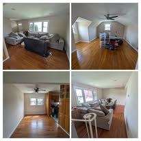
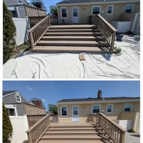
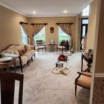
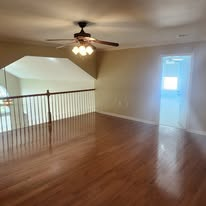
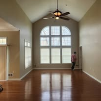
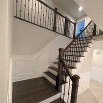
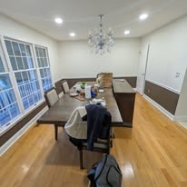
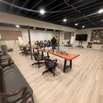

Interior Painting
Walls, ceilings, bedrooms, living spaces, kitchens, hallways, and full interior repaints.
Carteret, NJ | Central New Jersey | Free Estimates
Sal's Painting & Basic Renovations helps homeowners with interior painting, exterior painting, drywall repair, trim, doors, ceilings, accent walls, deck and fence staining, prep work, and practical home updates.
Services
Focused on the kinds of projects homeowners actually call about: clean repaints, repair prep, finish work, and practical upgrades.
Walls, ceilings, bedrooms, living spaces, kitchens, hallways, and full interior repaints.
Exterior surfaces that need a cleaner look, stronger curb appeal, and a fresh finish.
Patch, prep, sand, and ready surfaces before the painting starts so the finish looks right.
Detailed finish work on the surfaces that make a room feel complete once the job is done.
Feature walls and bold paint choices that upgrade a room without turning it into a full remodel.
Outdoor wood and painted surfaces that need cleanup, fresh color, or protective finishing.
Painting plus light renovation work when the job needs more than a quick coat of paint.
Call or text with the job details and get straightforward next steps before any work begins.
Why Choose Sal's
This business already shows strong public review signals. The website's job is to convert that trust into direct calls, texts, and estimate requests with clearer messaging than a Facebook page or directory profile can provide.
Gallery
Real project images create more trust than a generic contractor page. This gallery keeps the site proof-driven.








Service Area
Sal's Painting & Basic Renovations is positioned for homeowners in Carteret and surrounding Middlesex County communities looking for a painter, drywall repair help, accent-wall work, deck staining, or straightforward renovation support.
Core areas include Carteret, Perth Amboy, Woodbridge, Rahway, Linden, Iselin, Edison, Sayreville, South Amboy, and nearby neighborhoods.
About
Sal's Painting & Basic Renovations appears to already have a strong public reputation. What was missing was a dedicated site that clearly tells homeowners what services are offered, where the work is done, and what to do next.
This version is built to do that job fast: show the work, surface the trust, and make the next action obvious.
Contact
Call or text directly if you want the fastest reply. If you want to organize the details first, use the form below and the site will build a ready-to-send estimate text.